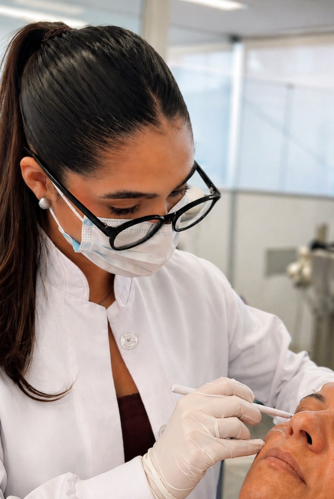
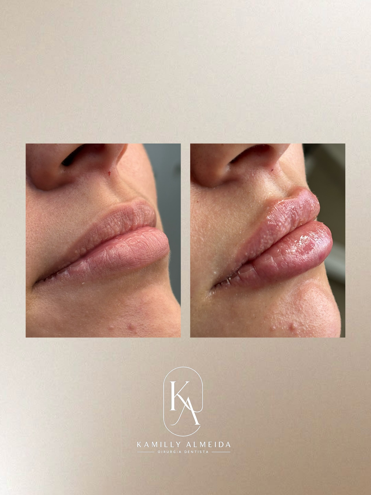
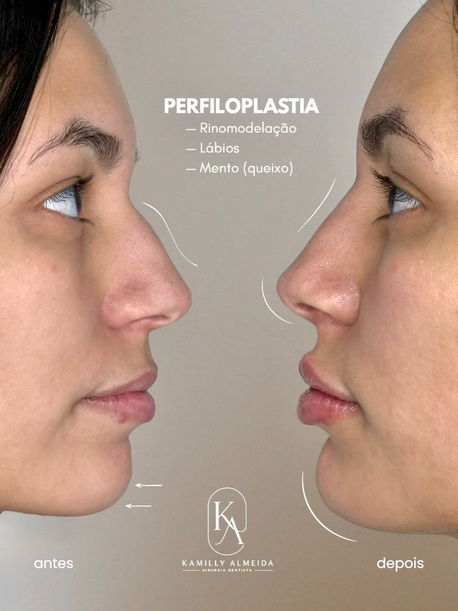
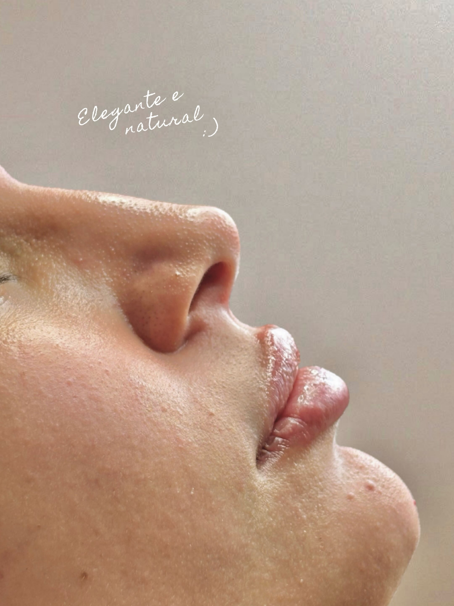
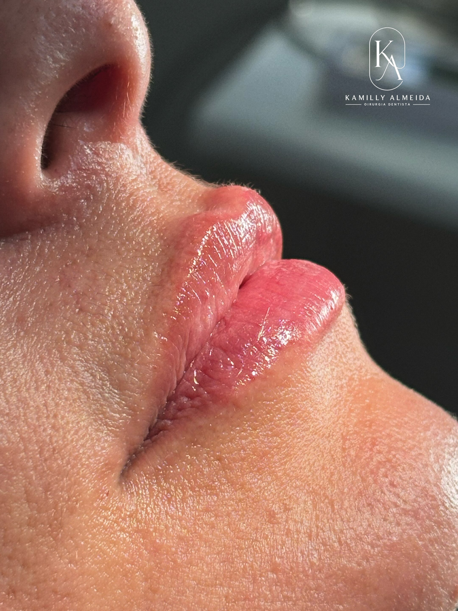
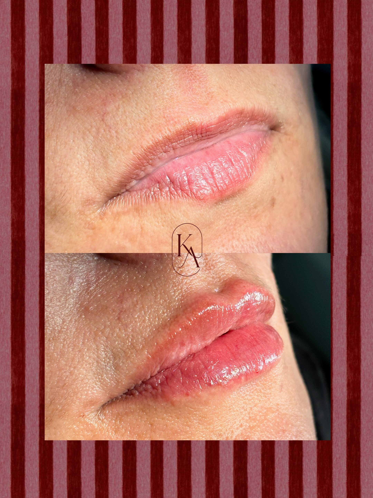

Harmonização facial
Planejamento estético voltado ao equilíbrio facial, refinamento dos traços e valorização da estrutura do rosto.
Harmonização orofacial • Estética facial
Descubra quais cuidados podem valorizar seus traços com uma avaliação estética gratuita e personalizada, a partir dos seus objetivos.
Comece pelo formulário. Conte o que deseja realçar e receba por e-mail as orientações para sua avaliação. Gratuita e sem compromisso com procedimentos.

Estética com intenção
Procedimentos estéticos bem indicados respeitam a identidade do rosto. A proposta é valorizar traços, suavizar pontos de incômodo e construir um resultado harmônico, sem exageros e sem perder naturalidade.
Procedimentos
Cada procedimento começa com uma avaliação individual para entender proporções, expectativas e o que realmente faz sentido para você.
Planejamento estético voltado ao equilíbrio facial, refinamento dos traços e valorização da estrutura do rosto.
Um olhar individual para proporções, contornos e pontos que você deseja valorizar no rosto.
Planejamento de contorno, proporção e volume, respeitando o formato natural dos seus lábios.
Avaliação das linhas de expressão e dos seus objetivos para um planejamento personalizado.
Uma possibilidade a ser considerada na avaliação dos seus objetivos de cuidado com a pele.
Cuidado voltado à qualidade e à hidratação da pele, com indicação definida na avaliação individual.
Um olhar para os detalhes
Conheça alguns registros do trabalho da Dra. Kamilly. Deslize para explorar e toque em uma imagem para vê-la por inteiro.





Registros individuais. Resultados variam de pessoa para pessoa e não representam garantia de resultado. Dra. Kamilly Almeida · CRO-SP 177.234.
Como funciona
Compartilhe seus objetivos, histórico e o que deseja melhorar. Essa etapa ajuda a entender seu momento antes da avaliação.
Após o envio, confira seu e-mail: você receberá as orientações para continuar e saber como dar o próximo passo da avaliação.
Na conversa, a Dra. Kamilly orienta o melhor caminho, tira dúvidas e indica o procedimento mais adequado para o seu caso.
O formulário é apenas a primeira etapa. A avaliação é o momento de entender seu rosto e orientar a decisão com responsabilidade.
Sobre a profissional
A Dra. Kamilly Almeida une olhar estético, formação odontológica e atenção aos detalhes para criar resultados que respeitam a identidade de cada paciente.
Sua abordagem é baseada em naturalidade, proporção e planejamento individual, sempre considerando o que combina com cada rosto.
Segurança e confiança
Nenhuma indicação deve ser feita sem entender o rosto, o histórico e o objetivo de cada paciente.
A proposta estética é construída com base em proporção, harmonia e naturalidade.
Atendimento conduzido por cirurgiã-dentista com registro profissional visível.
A avaliação ajuda a entender possibilidades, limites e o caminho mais adequado antes da decisão.
Avaliação estética gratuita
Conte o que você deseja realçar. O formulário é o primeiro passo para uma avaliação estética gratuita e personalizada. As orientações para continuar chegam por e-mail, sem compromisso com procedimentos.
Quero minha avaliação estética gratuita